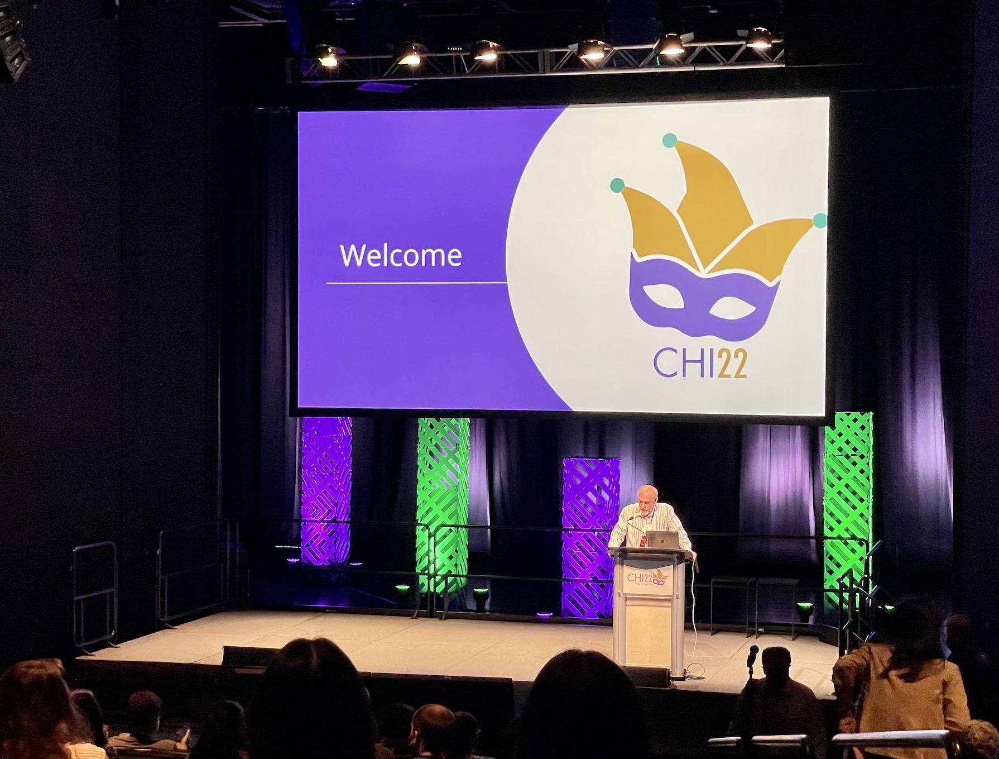
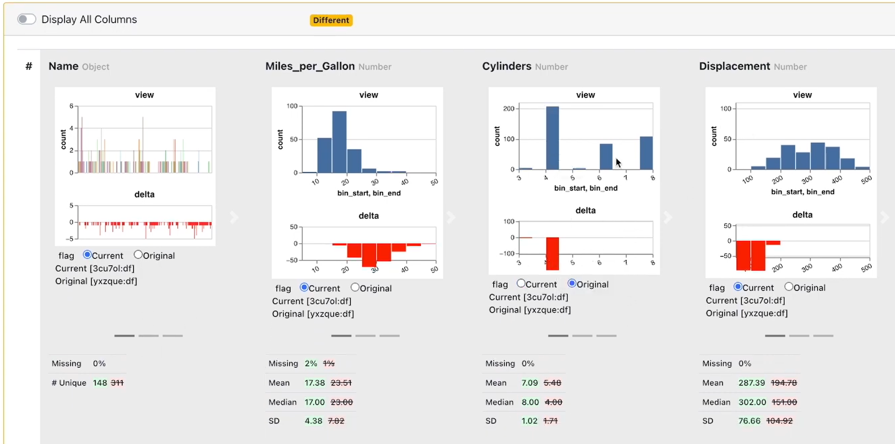
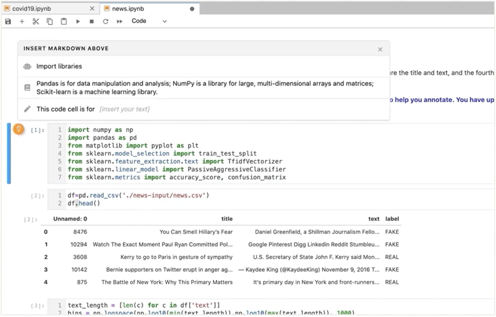
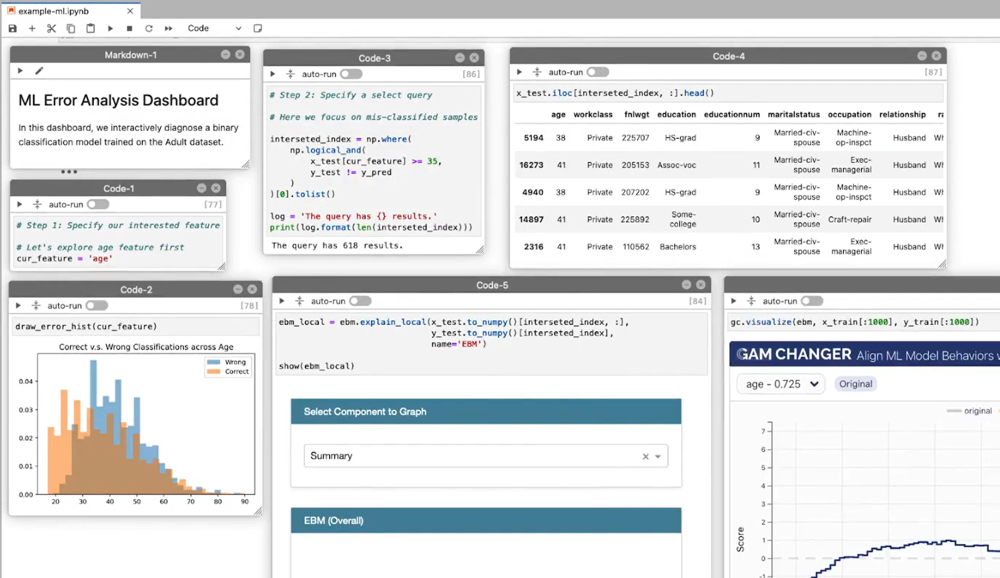
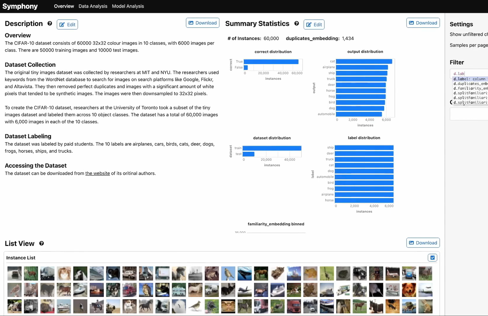
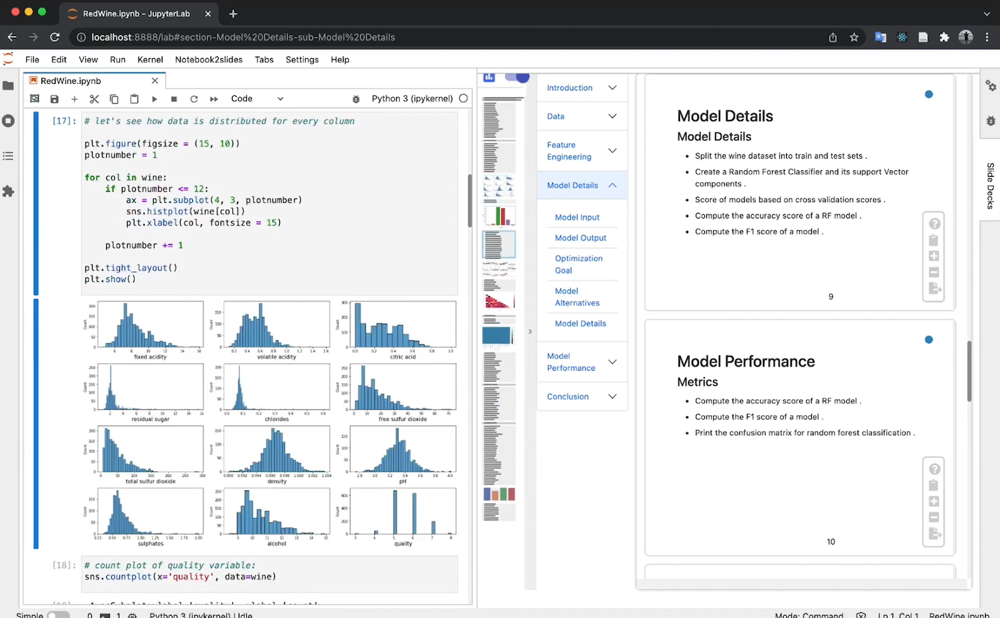
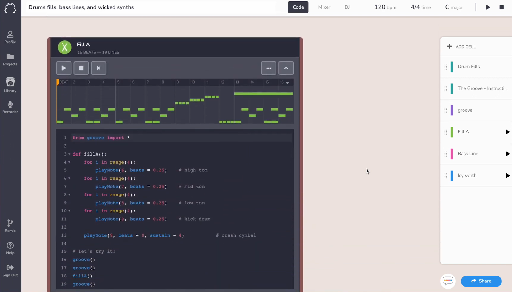

Austin Z. Henley
I work on software.
Computational notebooks research at CHI 2022
5/13/2022

Last week I attended the ACM CHI 2022 conference in New Orleans, the premier research conference in human-computer interaction. My goal was to attend as many presentations about data science and human-AI collaboration as possible.
Below are my notes about a handful of the presentations on computational notebooks, including my summary and links to the presentation video, short preview video, and paper for each.
Diff in the Loop: Supporting Data Comparison in Exploratory Data Analysis
April Yi Wang, Will Epperson, Robert A. DeLine, Steven M. Drucker
preview video,
talk video,
paper
My summary:
This paper contributes a tool for comparing versions of *data* throughout the data analysis process, called Diff in the Loop. The tool automatically saves snapshots of the code and provides visualizations of how the data changed. For example, if you filter automobiles that have fewer than 4 cylinders, how does that change the distribution of MPG and horsepower? Without this tool, you'd have to setup these plots after each step manually. A preliminary user study found that the tool does aid a common pain point, though the utility of each visualization is highly dependent on the task.

Documentation Matters: Human-Centered AI System to Assist Data Science Code Documentation in Computational Notebooks
April Yi Wang, Dakuo Wang, Jaimie Drozdal, Michael Muller, Soya Park, Justin D. Weisz, Xuye Liu, Lingfei Wu, Casey Dugan
talk video,
paper
My summary:
Notebooks aim to tell a story, but it may not be effective. This paper has two major contributions, (1) an investigation into what makes good notebook documentation and (2) a tool for automatically generating documentation. First, they analyzed 80 highly-rated Kaggle notebooks and found 9 types of information in the markdown cells (e.g., describing what the code is doing, explaining the result, or an external reference). Second, they designed Themisto for automatically generating documentation that uses a deep learning model and API documentation. Their within-subjects user study found that using Themisto reduced task time and resulted in better documentation.

StickyLand: Breaking the Linear Presentation of Computational Notebooks
Zijie J. Wang, Katie Dai, W. Keith Edwards
talk video,
paper
My summary:
This early work contributes StickyLand, a notebook extension for making non-linear notebooks. It enables users to make "sticky cells" that stay at the same position onscreen even when scrolling. These features make it possible to build dashboards from code and output cells.

Symphony: Composing Interactive Interfaces for Machine Learning
Alex Bäuerle, Ángel Alexander Cabrera, Fred Hohman, Megan Maher, David Koski, Xavier Suau, Titus Barik, Dominik Moritz
preview video,
talk video,
paper
My summary:
Symphony is a framework for creating interactive machine learning visualizations, either in notebooks or in webpages. These dashboards are intended to enhance collaboration between teams since prior interfaces are not designed to be reused or shared. Through a user-centric design process and field study, teams using Symphony found insights such as labeling errors and model blind spots.

Telling Stories from Computational Notebooks: AI-Assisted Presentation Slides Creation for Presenting Data Science Work
Chengbo Zheng, Dakuo Wang, April Yi Wang, Xiaojuan Ma
preview video,
talk video,
paper
My summary:
This paper introduces NB2Slides, an AI-based tool for creating slide presentations based on notebooks. The tool assists the user in locating relevant information, organizing the story, and customizing it. There is interesting discussion on the collaboration between humans and AI in a domain that involves mundane tasks (e.g., fetch information from a notebook) and creative tasks (e.g., craft a compelling story).

TunePad Playbooks: Designing Computational Notebooks for Creative Music Coding
Mike Horn, Amartya Banerjee, Matthew Brucker
talk video,
paper
My summary:
TunePad is a notebook platform for live coding music to teach students how to program. The systems alters the typical notebook paradigm to better suit the domain of creative work and to cater to students. For example, cells do not share state and do not have dependencies unless explicitly specified. This paper is a prime example of how notebooks can still evolve and be customized for specific domains.

Hope to see you next year at CHI 2023!